United States · 2024.2 – 2026.9Los Angelesロサンゼルス、青空からネオンまで♡ アルバムを保存青空に浮かぶハリウッドサイン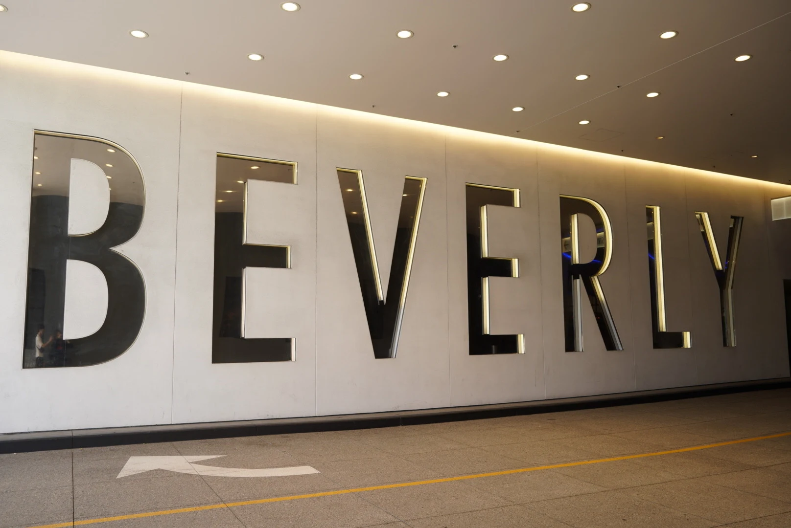BEVERLYの文字が並ぶ壁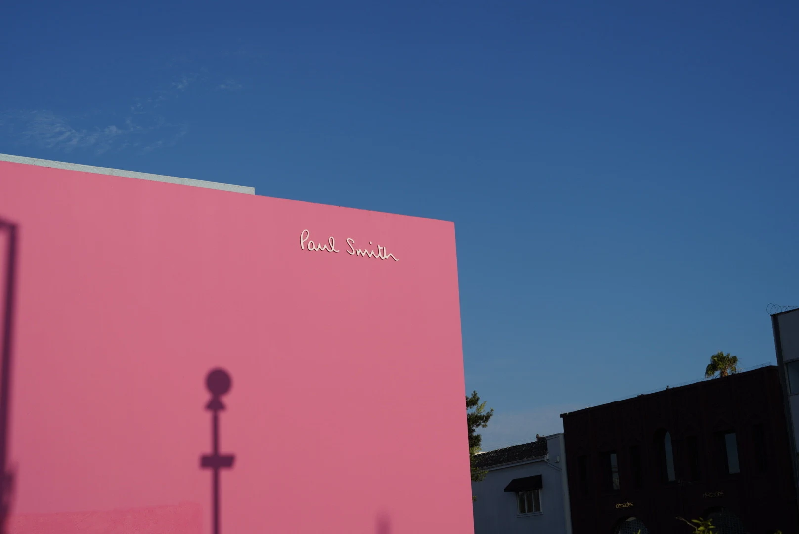Paul Smithのピンクの壁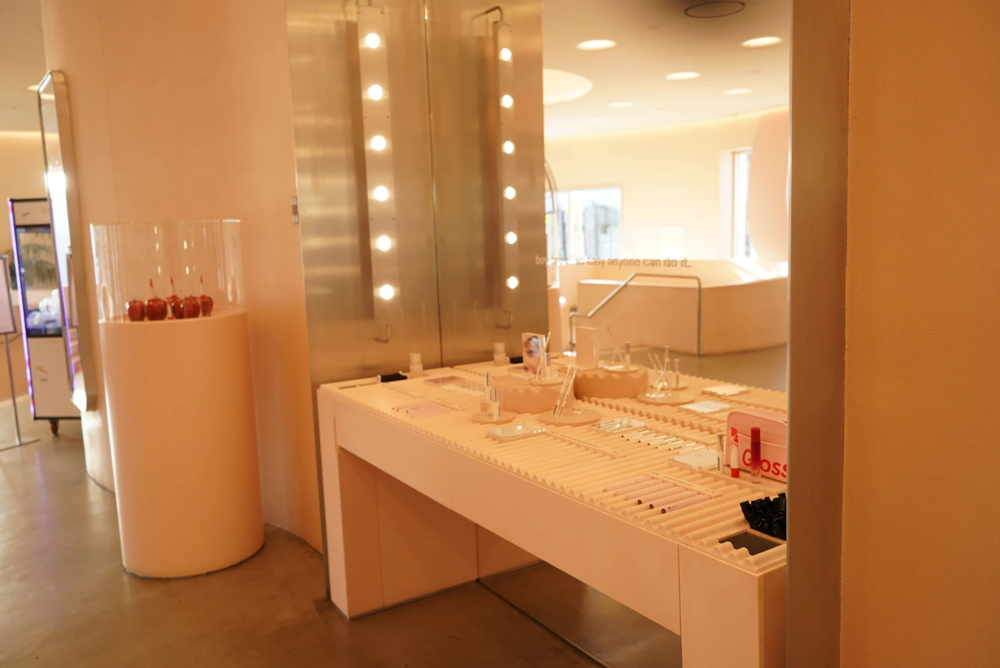淡いピンクのコスメショップ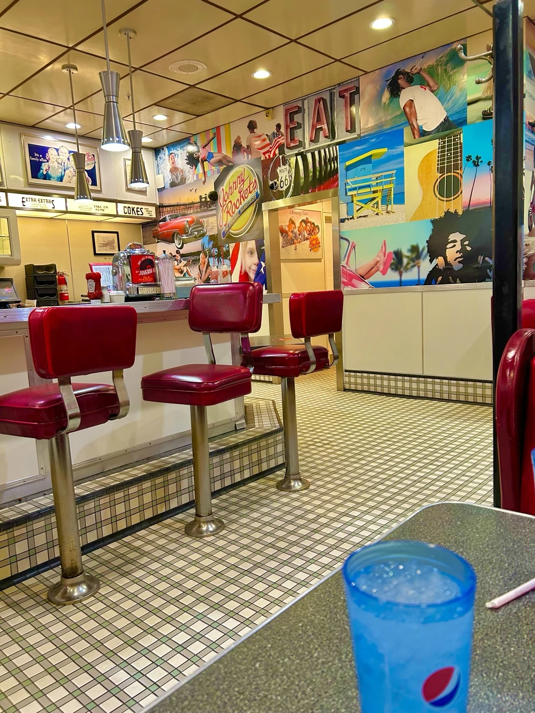赤いスツールが並ぶダイナー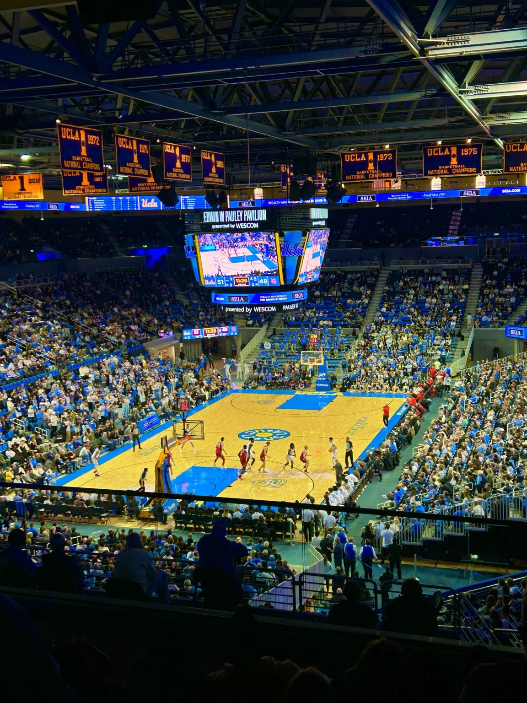UCLAのバスケットコート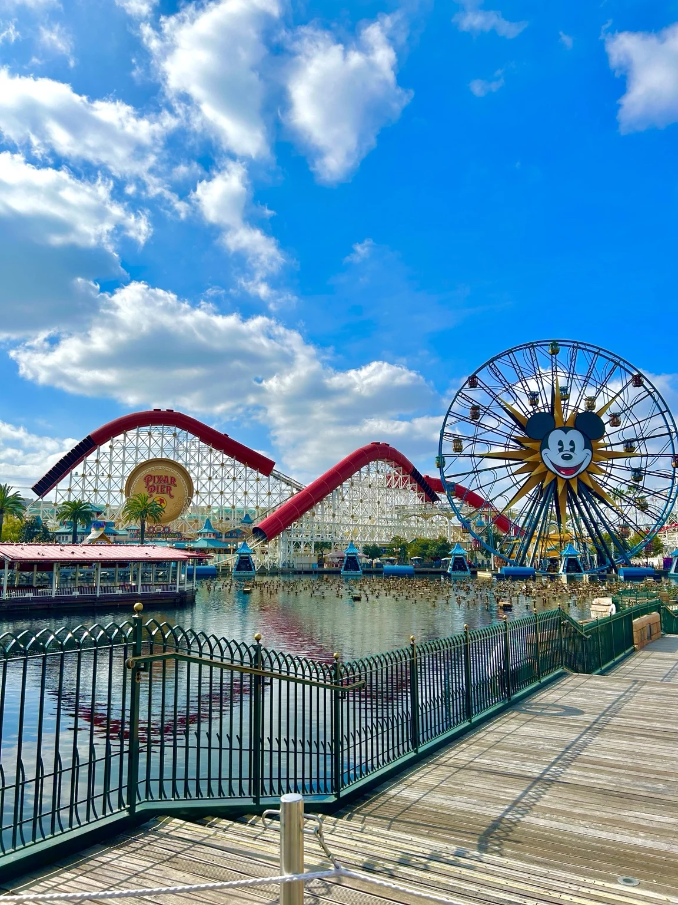アナハイムのピクサー・ピア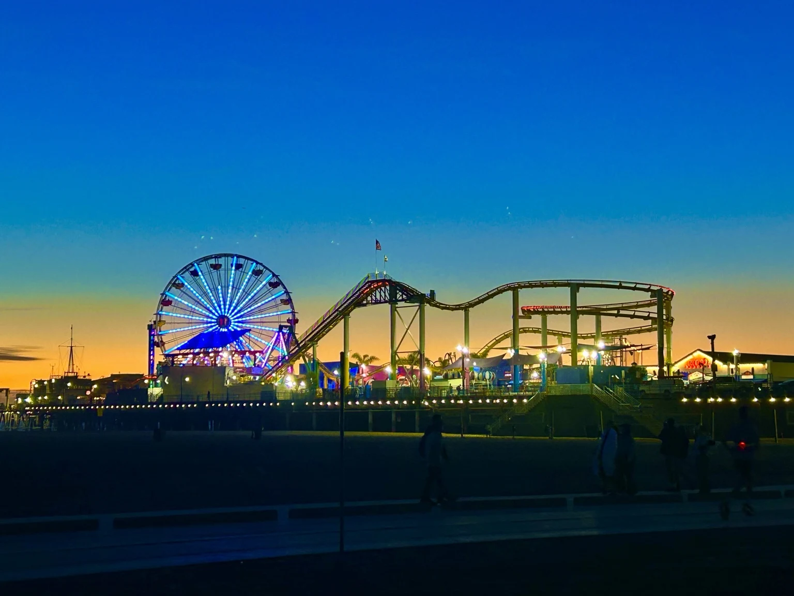夕暮れのサンタモニカ・ピア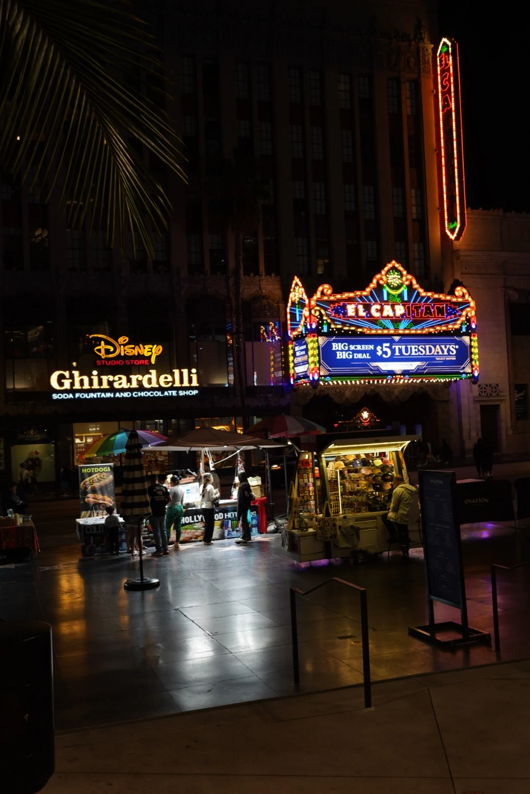エル・キャピタン劇場のネオン周辺の体験・宿泊を探すEXPERIENCEグリフィス天文台の訪問案内 ↗STAYロサンゼルス観光局のホテルガイド ↗
Mexico · 2026.9Cancúnカンクン、海から虹まで♡ アルバムを保存帆の向こうまで続く青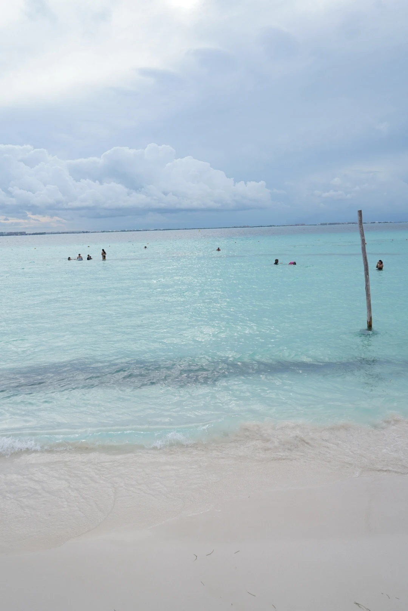淡い水色がほどける波打ち際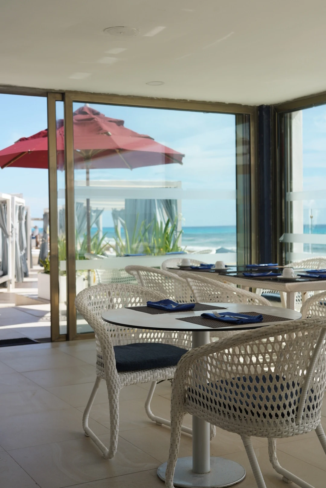白い椅子と、窓の向こうの海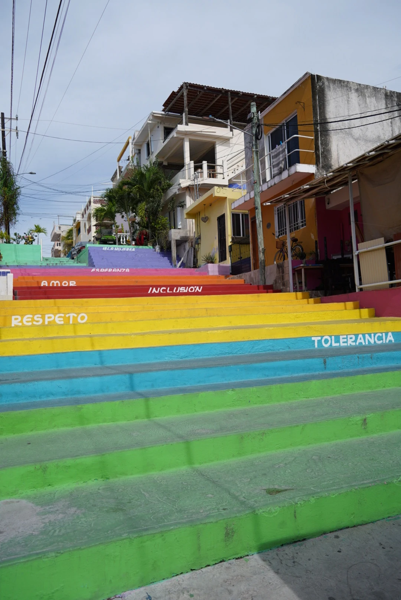イスラ・ムヘーレスの階段に並ぶ、色と言葉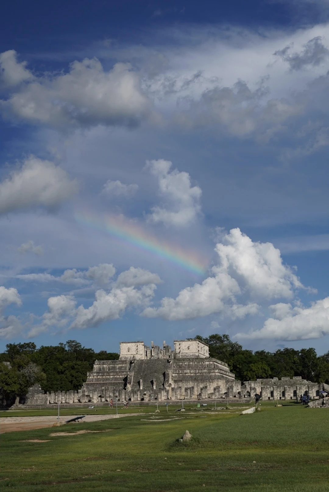石造りの遺跡にかかる虹周辺の体験・宿泊を探すEXPERIENCEカンクンの体験・観光スポット ↗STAYメキシカンカリブのブティックホテル ↗